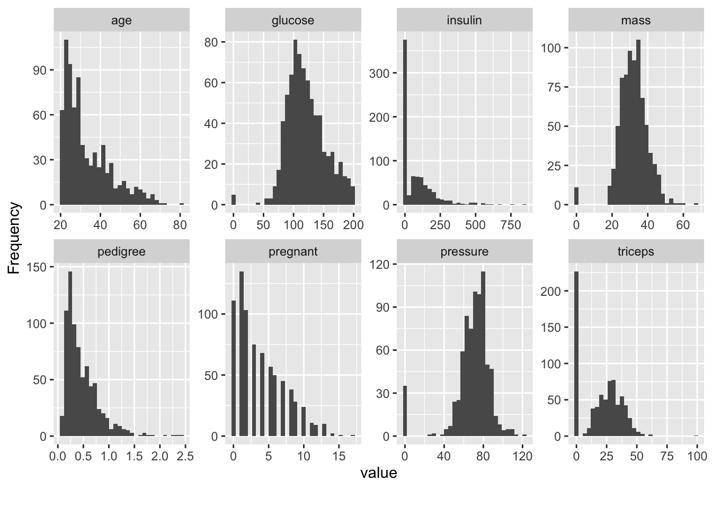
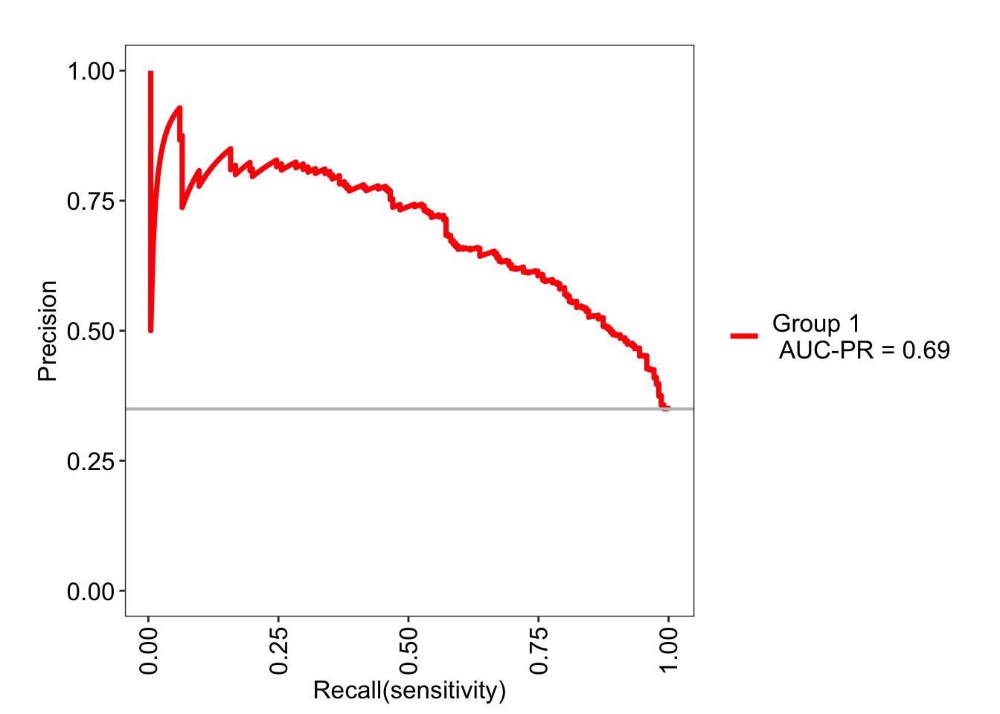
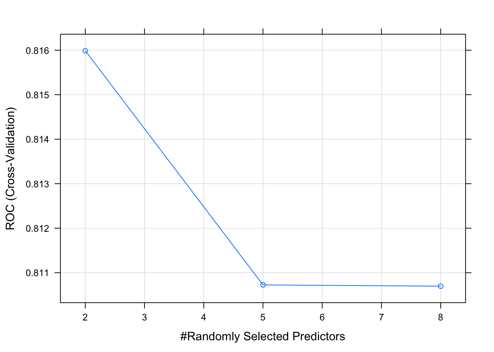

Chapter 7 Classification Example
Now that we’ve got an idea about how we might judge the performance quality of classification problem let’s look at the mechanics of implementing a classificsastion model using the caret package. We’ve already seen it in action on a regression problem where we were predicting the MPG for the mtcars data frame. We’ll be sticking with the Pima Indians dataset that we used previously This data is provided by the mlbench package. The source of the information is the National Institute of Diabetes and Digestive and Kidney Diseases which in turn was hosted on the UCI Repository of Machine Learning. The variables are:
pregnant - Number of times pregnant
glucose - Plasma glucose concentration (glucose tolerance test)
pressure - Diastolic blood pressure (mm Hg)
triceps - Triceps skin fold thickness (mm)
insulin - 2-Hour serum insulin (mu U/ml)
mass - Body mass index (weight in kg/(height in m)\^2)
pedigree - Diabetes pedigree function
age - Age (years)
diabetes - Class variable (test for diabetes)library(mlbench)
data("PimaIndiansDiabetes")
# The nqme is a little long so let's shorten it up
pm <- PimaIndiansDiabetesSo let’s look at some exploratory plots to see if there is anything interesting happening. We’ll use the Data Explorer pacakge to help us with this although both R and Python have various packages to help with this kind of thing. In fact, there are probably too many packages and more are being developed every 6 months or so.
7.1 Exploratory Plots
We’ll look use some stock plots from the DataExplorer package to get a feel for the data. Look at correlations between the variables to see if any are strongly correlated with the variable we wish to predict or any other variables. Let’s start out with the plot_intro function which can provide an overview of our data. It turns out that our data is pretty clean. There are no rows with missing values and we have only one categorical feature.
plot_intro(pm)
Let’s see if there are any string correltations we need to be aware of.
plot_correlation(pm, type="continuous")
There are more diabetes “negative” people than “positive”.
plot_bar(pm)
The histograms help us see what variables might be normally distributed although most of our features are skewed which makes sense in this case. For example, as people age, they tend to die so it’s not surprising that we have by far more young people. It looks to me that the insulin data is a little odd and might warrant greater consideration.
plot_histogram(pm)
This plot will show us side by side boxplots of the features as a function of “pos” or “neg”. This is helpful to determine if, for example, there might be significant differences between glucose levels across the positive and negative groups. It makes sense that there might be. Insulin might be also although it’s not totally apparent from the following graph. This is the kind of thing you would do to zone in on important variables.
plot_boxplot(pm,by="diabetes")
This plot will help us see if any of our features are normally distibuted:
plot_qq(pm,by="diabetes")
It turns out that Data Explorer will help us create a detailed report involving all of these plot tops.
create_report(pm, y = "diabetes")At this point we know that we want to predict “diabetes” and that perhaps glucose is an important variables in the data. We also don’t observe many strong correlations in the data so mulitcollinrarity isn’t a concern. We also don’t see strong evidence in the PCA plot that the data would benefit from a PCA transformation. One thing that we might consider doing is scaling the data since the features do not share the same measurement scale. We’ll take this into consideration.
7.2 Generalized Linear Models
Let’s pick a technique to model the data with the ultimate goal of being able to predict whether someone has diabetes or not. We’ll start with the glm function in R. We’ll take a kitchen sink approach where we predict the diabetes variable (“yes” or “no”) based on the rest of the information in the data frame.
set.seed(123)
idx <- createDataPartition(pm$diabetes, p = .8,
list = FALSE,
times = 1)
head(idx)## Resample1
## [1,] 1
## [2,] 2
## [3,] 3
## [4,] 4
## [5,] 5
## [6,] 6train <- pm[ idx,]
test <- pm[-idx,]
#
nrow(train)## [1] 615nrow(test)## [1] 153If we used the non caret approach we might do something like the following:
pm_model_glm <- glm(diabetes ~ .,
data = train, family="binomial")
pm_model_fitpreds <- predict(pm_model_glm,test,type="response")
fitpredt <- function(t) ifelse(pm_model_fitpreds > t , "pos","neg")
fitpreds <- factor(fitpredt(.4),level=levels(test$diabetes))
caret::confusionMatrix(fitpreds,
test$diabetes,
positive="pos")## Confusion Matrix and Statistics
##
## Reference
## Prediction neg pos
## neg 88 20
## pos 12 33
##
## Accuracy : 0.7908
## 95% CI : (0.7178, 0.8523)
## No Information Rate : 0.6536
## P-Value [Acc > NIR] : 0.0001499
##
## Kappa : 0.5211
##
## Mcnemar's Test P-Value : 0.2159249
##
## Sensitivity : 0.6226
## Specificity : 0.8800
## Pos Pred Value : 0.7333
## Neg Pred Value : 0.8148
## Prevalence : 0.3464
## Detection Rate : 0.2157
## Detection Prevalence : 0.2941
## Balanced Accuracy : 0.7513
##
## 'Positive' Class : pos
## And if you haven’t yet enough of ROC curves just yet, we could put up one of those.
library(caTools)
colAUC(pm_model_fitpreds,test$diabetes,plotROC=TRUE)
## [,1]
## neg vs. pos 0.8296226But wait, we’ve already been through the whole ROC curve, AUC, confusion matrix route so why would we take a manual approach if we have the caret package readily available. We can explore any number methods, implement K Fold Cross Validation,and get feedback on the performance measures at the same time. Let’s reframe our above work using the caret package conveniences.
We’ve seen this before in the regression section so we’ll dive right in with a realistic example. We want to use Cross Fold validation here. We’ll select a metric of “Accuracy” and process the data by centering and scaling it since we have data on different measure scales.
ctrl <- trainControl(method = "cv",
number = 5)
pm_glm_mod <- train(form = diabetes ~ .,
data = train,
trControl = ctrl,
metric = "Accuracy",
method = "glm",
family = "binomial",
preProc = c("center", "scale"))
pm_glm_mod## Generalized Linear Model
##
## 615 samples
## 8 predictor
## 2 classes: 'neg', 'pos'
##
## Pre-processing: centered (8), scaled (8)
## Resampling: Cross-Validated (5 fold)
## Summary of sample sizes: 492, 492, 492, 492, 492
## Resampling results:
##
## Accuracy Kappa
## 0.7756098 0.4849025pm_glm_mod$results## parameter Accuracy Kappa AccuracySD KappaSD
## 1 none 0.7756098 0.4849025 0.04726648 0.1046417So we get an estiamte of a 77% accuracy rate when the model is applied to out of sample data. This isn’t so impressive but we aren’t here to solve that problem (at least not just yet). So let’s make some predictions use thing test data to see what the Accuracy rate is.
pm_glm_pred_labels <- predict(pm_glm_mod,test)
confusionMatrix(pm_glm_pred_labels,test$diabetes)## Confusion Matrix and Statistics
##
## Reference
## Prediction neg pos
## neg 91 26
## pos 9 27
##
## Accuracy : 0.7712
## 95% CI : (0.6965, 0.8352)
## No Information Rate : 0.6536
## P-Value [Acc > NIR] : 0.001098
##
## Kappa : 0.4536
##
## Mcnemar's Test P-Value : 0.006841
##
## Sensitivity : 0.9100
## Specificity : 0.5094
## Pos Pred Value : 0.7778
## Neg Pred Value : 0.7500
## Prevalence : 0.6536
## Detection Rate : 0.5948
## Detection Prevalence : 0.7647
## Balanced Accuracy : 0.7097
##
## 'Positive' Class : neg
## The train function provides is with an object that contains lots of informstion but in no way interferes with the results of the glm model. It’s as if you had built it using the standalone glm function which means that you can easily examine the model diagnostics:
summary(pm_glm_mod$finalModel)##
## Call:
## NULL
##
## Deviance Residuals:
## Min 1Q Median 3Q Max
## -2.5516 -0.7296 -0.4037 0.7642 2.7704
##
## Coefficients:
## Estimate Std. Error z value Pr(>|z|)
## (Intercept) -0.87828 0.10862 -8.086 6.16e-16 ***
## pregnant 0.34964 0.11914 2.935 0.00334 **
## glucose 1.03922 0.13048 7.965 1.66e-15 ***
## pressure -0.25398 0.11127 -2.283 0.02246 *
## triceps 0.01623 0.12153 0.134 0.89379
## insulin -0.17091 0.11809 -1.447 0.14781
## mass 0.81801 0.13393 6.108 1.01e-09 ***
## pedigree 0.32550 0.10906 2.985 0.00284 **
## age 0.23529 0.12291 1.914 0.05558 .
## ---
## Signif. codes: 0 '***' 0.001 '**' 0.01 '*' 0.05 '.' 0.1 ' ' 1
##
## (Dispersion parameter for binomial family taken to be 1)
##
## Null deviance: 796.05 on 614 degrees of freedom
## Residual deviance: 581.37 on 606 degrees of freedom
## AIC: 599.37
##
## Number of Fisher Scoring iterations: 5This includes the ability to see the various diagnostic plots:
plot(pm_glm_mod$finalModel)


We can certainly change the scoring metric to prioritize, for example, the area under the associated ROC curve. We just need to make some adjustments to the trainControl argument list and the train argument list. But these changes are minor.
ctrl <- trainControl(method = "cv",
number = 5,
classProbs = T,
savePredictions = T, # Useful for Diagnostics
summaryFunction = twoClassSummary)
pm_glm_mod <- train(form = diabetes ~ .,
data = train,
trControl = ctrl,
metric = "ROC",
method = "glm",
family = "binomial",
preProc = c("center", "scale"))
pm_glm_mod$results## parameter ROC Sens Spec ROCSD SensSD SpecSD
## 1 none 0.83 0.8775 0.5767442 0.03093329 0.01629801 0.08607793Notice that we get a different result back than before. Here we get the Area Under the ROC curve as well as the Sensitivity and Specifity. In many ways, this is all we need but if we wanted more we could use the MLeval package to help us.
MLeval::evalm(pm_glm_mod)


## $roc
##
## $proc
##
## $prg
##
## $cc
##
## $probs
## $probs$`Group 1`
## neg pos obs Group TP TN FP FN SENS SPEC
## 32 0.02217280 0.9778272 pos Group 1 1 400 0 214 0.004651163 1.0000
## 162 0.02653983 0.9734602 neg Group 1 1 399 1 214 0.004651163 0.9975
## 133 0.02927972 0.9707203 pos Group 1 2 399 1 213 0.009302326 0.9975
## 91 0.03753611 0.9624639 pos Group 1 3 399 1 212 0.013953488 0.9975
## 273 0.03843262 0.9615674 pos Group 1 4 399 1 211 0.018604651 0.9975
## 271 0.03875394 0.9612461 pos Group 1 5 399 1 210 0.023255814 0.9975
## 152 0.05006443 0.9499356 pos Group 1 6 399 1 209 0.027906977 0.9975
## 599 0.05343322 0.9465668 neg Group 1 6 398 2 209 0.027906977 0.9950
## 132 0.05395120 0.9460488 pos Group 1 7 398 2 208 0.032558140 0.9950
## 243 0.05592280 0.9440772 neg Group 1 7 397 3 208 0.032558140 0.9925
## 576 0.05665742 0.9433426 neg Group 1 7 396 4 208 0.032558140 0.9900
## 428 0.06152255 0.9384775 pos Group 1 8 396 4 207 0.037209302 0.9900
## 491 0.06592492 0.9340751 pos Group 1 9 396 4 206 0.041860465 0.9900
## 407 0.06838412 0.9316159 pos Group 1 10 396 4 205 0.046511628 0.9900
## 71 0.07126228 0.9287377 pos Group 1 11 396 4 204 0.051162791 0.9900
## 81 0.07656184 0.9234382 neg Group 1 11 395 5 204 0.051162791 0.9875
## 99 0.07860194 0.9213981 pos Group 1 12 395 5 203 0.055813953 0.9875
## 497 0.08375937 0.9162406 pos Group 1 13 395 5 202 0.060465116 0.9875
## 167 0.08654437 0.9134556 pos Group 1 14 395 5 201 0.065116279 0.9875
## 158 0.09218622 0.9078138 pos Group 1 15 395 5 200 0.069767442 0.9875
## 376 0.09390555 0.9060945 neg Group 1 15 394 6 200 0.069767442 0.9850
## 398 0.10118226 0.8988177 pos Group 1 16 394 6 199 0.074418605 0.9850
## 512 0.10209732 0.8979027 pos Group 1 17 394 6 198 0.079069767 0.9850
## 2 0.10414621 0.8958538 pos Group 1 18 394 6 197 0.083720930 0.9850
## 59 0.10540637 0.8945936 neg Group 1 18 393 7 197 0.083720930 0.9825
## 126 0.10622243 0.8937776 pos Group 1 19 393 7 196 0.088372093 0.9825
## 530 0.10900417 0.8909958 pos Group 1 20 393 7 195 0.093023256 0.9825
## 163 0.11778919 0.8822108 pos Group 1 21 393 7 194 0.097674419 0.9825
## 490 0.12492220 0.8750778 pos Group 1 22 393 7 193 0.102325581 0.9825
## 431 0.12575488 0.8742451 pos Group 1 23 393 7 192 0.106976744 0.9825
## 201 0.12820510 0.8717949 pos Group 1 24 393 7 191 0.111627907 0.9825
## 386 0.12981904 0.8701810 pos Group 1 25 393 7 190 0.116279070 0.9825
## 151 0.13085837 0.8691416 pos Group 1 26 393 7 189 0.120930233 0.9825
## 255 0.13214019 0.8678598 pos Group 1 27 393 7 188 0.125581395 0.9825
## 484 0.13418598 0.8658140 pos Group 1 28 393 7 187 0.130232558 0.9825
## 518 0.13443483 0.8655652 pos Group 1 29 393 7 186 0.134883721 0.9825
## 301 0.13723213 0.8627679 pos Group 1 30 393 7 185 0.139534884 0.9825
## 575 0.13782587 0.8621741 pos Group 1 31 393 7 184 0.144186047 0.9825
## 230 0.13919771 0.8608023 pos Group 1 32 393 7 183 0.148837209 0.9825
## 67 0.14016631 0.8598337 pos Group 1 33 393 7 182 0.153488372 0.9825
## 413 0.14441435 0.8555857 pos Group 1 34 393 7 181 0.158139535 0.9825
## 377 0.14555044 0.8544496 pos Group 1 35 393 7 180 0.162790698 0.9825
## 300 0.15186416 0.8481358 pos Group 1 36 393 7 179 0.167441860 0.9825
## 606 0.15499952 0.8450005 pos Group 1 37 393 7 178 0.172093023 0.9825
## 317 0.15674045 0.8432595 neg Group 1 37 392 8 178 0.172093023 0.9800
## 558 0.15834015 0.8416599 pos Group 1 38 392 8 177 0.176744186 0.9800
## 344 0.15874539 0.8412546 pos Group 1 39 392 8 176 0.181395349 0.9800
## 408 0.16338788 0.8366121 pos Group 1 40 392 8 175 0.186046512 0.9800
## 157 0.17179225 0.8282077 neg Group 1 40 391 9 175 0.186046512 0.9775
## 554 0.17215232 0.8278477 pos Group 1 41 391 9 174 0.190697674 0.9775
## 244 0.17486927 0.8251307 pos Group 1 42 391 9 173 0.195348837 0.9775
## 190 0.18502185 0.8149782 pos Group 1 43 391 9 172 0.200000000 0.9775
## Informedness PREC NPV MARK F1 MCC
## 32 0.004651163 1.0000000 0.6514658 0.6514658 0.009259259 0.05504610
## 162 0.002151163 0.5000000 0.6508972 0.1508972 0.009216590 0.01801678
## 133 0.006802326 0.6666667 0.6519608 0.3186275 0.018348624 0.04655543
## 91 0.011453488 0.7500000 0.6530278 0.4030278 0.027397260 0.06794170
## 273 0.016104651 0.8000000 0.6540984 0.4540984 0.036363636 0.08551664
## 271 0.020755814 0.8333333 0.6551724 0.4885057 0.045248869 0.10069426
## 152 0.025406977 0.8571429 0.6562500 0.5133929 0.054054054 0.11420928
## 599 0.022906977 0.7500000 0.6556837 0.4056837 0.053811659 0.09640014
## 132 0.027558140 0.7777778 0.6567657 0.4345435 0.062500000 0.10943130
## 243 0.025058140 0.7000000 0.6561983 0.3561983 0.062222222 0.09447575
## 576 0.022558140 0.6363636 0.6556291 0.2919928 0.061946903 0.08115919
## 428 0.027209302 0.6666667 0.6567164 0.3233831 0.070484581 0.09380313
## 491 0.031860465 0.6923077 0.6578073 0.3501150 0.078947368 0.10561641
## 407 0.036511628 0.7142857 0.6589018 0.3731875 0.087336245 0.11672911
## 71 0.041162791 0.7333333 0.6600000 0.3933333 0.095652174 0.12724267
## 81 0.038662791 0.6875000 0.6594324 0.3469324 0.095238095 0.11581612
## 99 0.043313953 0.7058824 0.6605351 0.3664175 0.103448276 0.12598011
## 497 0.047965116 0.7222222 0.6616415 0.3838638 0.111587983 0.13569108
## 167 0.052616279 0.7368421 0.6627517 0.3995938 0.119658120 0.14500048
## 158 0.057267442 0.7500000 0.6638655 0.4138655 0.127659574 0.15395136
## 376 0.054767442 0.7142857 0.6632997 0.3775854 0.127118644 0.14380329
## 398 0.059418605 0.7272727 0.6644182 0.3916909 0.135021097 0.15255730
## 512 0.064069767 0.7391304 0.6655405 0.4046710 0.142857143 0.16101918
## 2 0.068720930 0.7500000 0.6666667 0.4166667 0.150627615 0.16921501
## 59 0.066220930 0.7200000 0.6661017 0.3861017 0.150000000 0.15990001
## 126 0.070872093 0.7307692 0.6672326 0.3980018 0.157676349 0.16795006
## 530 0.075523256 0.7407407 0.6683673 0.4091081 0.165289256 0.17577592
## 163 0.080174419 0.7500000 0.6695060 0.4195060 0.172839506 0.18339478
## 490 0.084825581 0.7586207 0.6706485 0.4292692 0.180327869 0.19082192
## 431 0.089476744 0.7666667 0.6717949 0.4384615 0.187755102 0.19807097
## 201 0.094127907 0.7741935 0.6729452 0.4471388 0.195121951 0.20515417
## 386 0.098779070 0.7812500 0.6740995 0.4553495 0.202429150 0.21208253
## 151 0.103430233 0.7878788 0.6752577 0.4631365 0.209677419 0.21886598
## 255 0.108081395 0.7941176 0.6764200 0.4705376 0.216867470 0.22551355
## 484 0.112732558 0.8000000 0.6775862 0.4775862 0.224000000 0.23203343
## 518 0.117383721 0.8055556 0.6787565 0.4843120 0.231075697 0.23843311
## 301 0.122034884 0.8108108 0.6799308 0.4907416 0.238095238 0.24471942
## 575 0.126686047 0.8157895 0.6811092 0.4968987 0.245059289 0.25089864
## 230 0.131337209 0.8205128 0.6822917 0.5028045 0.251968504 0.25697653
## 67 0.135988372 0.8250000 0.6834783 0.5084783 0.258823529 0.26295842
## 413 0.140639535 0.8292683 0.6846690 0.5139373 0.265625000 0.26884921
## 377 0.145290698 0.8333333 0.6858639 0.5191972 0.272373541 0.27465346
## 300 0.149941860 0.8372093 0.6870629 0.5242722 0.279069767 0.28037538
## 606 0.154593023 0.8409091 0.6882662 0.5291753 0.285714286 0.28601889
## 317 0.152093023 0.8222222 0.6877193 0.5099415 0.284615385 0.27849335
## 558 0.156744186 0.8260870 0.6889279 0.5150149 0.291187739 0.28412249
## 344 0.161395349 0.8297872 0.6901408 0.5199281 0.297709924 0.28967909
## 408 0.166046512 0.8333333 0.6913580 0.5246914 0.304182510 0.29516634
## 157 0.163546512 0.8163265 0.6908127 0.5071393 0.303030303 0.28799454
## 554 0.168197674 0.8200000 0.6920354 0.5120354 0.309433962 0.29346748
## 244 0.172848837 0.8235294 0.6932624 0.5167918 0.315789474 0.29887600
## 190 0.177500000 0.8269231 0.6944938 0.5214169 0.322097378 0.30422277
## FPR PG RG
## 32 0.0000 1.0000000 0
## 162 0.0025 0.1156250 0
## 133 0.0025 0.3250000 0
## 91 0.0025 0.4617187 0
## 273 0.0025 0.5540000 0
## 271 0.0025 0.6197917 0
## 152 0.0025 0.6688776 0
## 599 0.0050 0.4617187 0
## 132 0.0050 0.5120370 0
## 243 0.0075 0.3771250 0
## 576 0.0100 0.2805785 0
## 428 0.0100 0.3250000 0
## 491 0.0100 0.3647929 0
## 407 0.0100 0.4005102 0
## 71 0.0100 0.4326667 0
## 81 0.0125 0.3571777 0
## 99 0.0125 0.3866782 0
## 497 0.0125 0.4137731 0
## 167 0.0125 0.4387119 0
## 158 0.0125 0.4617187 0
## 376 0.0150 0.4005102 0
## 398 0.0150 0.4223140 0
## 512 0.0150 0.4426749 0
## 2 0.0150 0.4617187 0
## 59 0.0175 0.4100400 0
## 126 0.0175 0.4282729 0
## 530 0.0175 0.4454733 0
## 163 0.0175 0.4617187 0
## 490 0.0175 0.4770809 0
## 431 0.0175 0.4916250 0
## 201 0.0175 0.5054110 0
## 386 0.0175 0.5184937 0
## 151 0.0175 0.5309229 0
## 255 0.0175 0.5427444 0
## 484 0.0175 0.5540000 0
## 518 0.0175 0.5647280 0
## 301 0.0175 0.5749635 0
## 575 0.0175 0.5847386 0
## 230 0.0175 0.5940828 0
## 67 0.0175 0.6030234 0
## 413 0.0175 0.6115854 0
## 377 0.0175 0.6197917 0
## 300 0.0175 0.6276636 0
## 606 0.0175 0.6352208 0
## 317 0.0200 0.5974815 0
## 558 0.0200 0.6051985 0
## 344 0.0200 0.6126301 0
## 408 0.0200 0.6197917 0
## 157 0.0225 0.5857976 0
## 554 0.0225 0.5930650 0
## 244 0.0225 0.6000865 0
## 190 0.0225 0.6068741 0
## [ reached 'max' / getOption("max.print") -- omitted 563 rows ]
##
##
## $optres
## $optres$`Group 1`
## Score CI
## SENS 0.786 0.73-0.84
## SPEC 0.730 0.68-0.77
## MCC 0.495 <NA>
## Informedness 0.516 <NA>
## PREC 0.610 0.55-0.67
## NPV 0.864 0.82-0.9
## FPR 0.270 <NA>
## F1 0.687 <NA>
## TP 169.000 <NA>
## FP 108.000 <NA>
## TN 292.000 <NA>
## FN 46.000 <NA>
## AUC-ROC 0.830 0.79-0.87
## AUC-PR 0.690 <NA>
## AUC-PRG 0.250 <NA>
##
##
## $stdres
## $stdres$`Group 1`
## Score CI
## SENS 0.577 0.51-0.64
## SPEC 0.878 0.84-0.91
## MCC 0.482 <NA>
## Informedness 0.454 <NA>
## PREC 0.717 0.65-0.78
## NPV 0.794 0.75-0.83
## FPR 0.122 <NA>
## F1 0.639 <NA>
## TP 124.000 <NA>
## FP 49.000 <NA>
## TN 351.000 <NA>
## FN 91.000 <NA>
## AUC-ROC 0.830 0.79-0.87
## AUC-PR 0.690 <NA>
## AUC-PRG 0.250 <NA>7.3 Random Forests
Let’s use random forests to see what results we get. Random forests are robust to over fitting and are fairly easy to implement. They can improve accuracy by fitting many trees. Each tree is fit to a resampled version of the input data (usually a bootstrap). This is known as bootstrap aggregation or “bagged” trees. At each split, the function takes a random sample of columns (the mtry argument).
The function we will use here, ranger, has three hyper parameters which could be set to a range of values which, in turn, could influence the resulting model. With glm, we didn’t really have a hyper parameter. Here is how to tell if a caret-supported model has one or more hyper parameters available for tuning:
modelLookup("ranger")## model parameter label forReg forClass
## 1 ranger mtry #Randomly Selected Predictors TRUE TRUE
## 2 ranger splitrule Splitting Rule TRUE TRUE
## 3 ranger min.node.size Minimal Node Size TRUE TRUE
## probModel
## 1 TRUE
## 2 TRUE
## 3 TRUEWe’ll switch out metric back to Accuracy
ctrl <- trainControl(method = "cv",
number = 5
)
pm_ranger_mod <- train(form = diabetes ~ .,
data = train,
trControl = ctrl,
metric = "Accuracy",
method = "ranger",
preProc = c("center", "scale")
)By default the training process will move through three different values of mtry though we could either set this explicitly in the train function or as part of the hyper parameter tuning processed mentioned previously. If we choose the latter, then we can take advantage of the fact that caret knows what hyper parameters the method supports and can cycle through possible valid values of these hyper parameters. This is accomplished via the tuneLength argument to the train function. We could use the tuneGrid argument along with a manually specified tuning grid but it’s easier to use tuneLength for now.
pm_ranger_mod## Random Forest
##
## 615 samples
## 8 predictor
## 2 classes: 'neg', 'pos'
##
## Pre-processing: centered (8), scaled (8)
## Resampling: Cross-Validated (5 fold)
## Summary of sample sizes: 492, 492, 492, 492, 492
## Resampling results across tuning parameters:
##
## mtry splitrule Accuracy Kappa
## 2 gini 0.7430894 0.4171190
## 2 extratrees 0.7495935 0.4200788
## 5 gini 0.7512195 0.4438470
## 5 extratrees 0.7609756 0.4514632
## 8 gini 0.7495935 0.4402630
## 8 extratrees 0.7609756 0.4578970
##
## Tuning parameter 'min.node.size' was held constant at a value of 1
## Accuracy was used to select the optimal model using the largest value.
## The final values used for the model were mtry = 5, splitrule =
## extratrees and min.node.size = 1.ctrl <- trainControl(method = "cv",
number = 5,
classProbs = TRUE,
summaryFunction = twoClassSummary
)
pm_ranger_mod <- train(form = diabetes ~ .,
data = train,
trControl = ctrl,
metric = "ROC",
method = "ranger",
tuneLength = 7,
preProc = c("center", "scale")
)The object can be plotted. Here we see that the max AUC of .825 occurs when mtry is 3 and the Gini criterion is used to evaluate a tree.
plot(pm_ranger_mod)
max(pm_ranger_mod[["results"]]$ROC)## [1] 0.8190116preds <- predict(pm_ranger_mod,test)
confusionMatrix(preds,test$diabetes)## Confusion Matrix and Statistics
##
## Reference
## Prediction neg pos
## neg 88 21
## pos 12 32
##
## Accuracy : 0.7843
## 95% CI : (0.7106, 0.8466)
## No Information Rate : 0.6536
## P-Value [Acc > NIR] : 0.0003018
##
## Kappa : 0.5039
##
## Mcnemar's Test P-Value : 0.1637344
##
## Sensitivity : 0.8800
## Specificity : 0.6038
## Pos Pred Value : 0.8073
## Neg Pred Value : 0.7273
## Prevalence : 0.6536
## Detection Rate : 0.5752
## Detection Prevalence : 0.7124
## Balanced Accuracy : 0.7419
##
## 'Positive' Class : neg
##